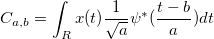

この機能を使って、ベクターデータ Scale で表される各スケールおよびnを入力信号のサイズとした場合の1からnまでの各位置bにおける実数の連続ウェーブレット係数を計算します。
x(t)を入力信号とし、?を 選択されたウェーブレット関数とすると、スケールaおよび位置bでのx(t)の連続ウェーブレット係数は下記のようになります。

結果はワークシート上の範囲に出力できます。係数行列チェックボックスを選択した場合には、行列に出力されます。ワークシート上の出力範囲は、m 列で構成され、それぞれの列は、n 行あり、 mは、ベクターデータScale のサイズです。各列はスケールに対応しており、各行は位置に対応しています。一方、結果の行列は、それを生成することを選択していれば、 n 列と m 行になります。行番号M0 で列番号N0 のセルの値は、スケールM0 および 位置 N0係数です。
この関数では、Morlet、 Mexican Hat、Gaussianウェーブレットの導関数の3種類のウェーブレットがサポートされています。
Morletウェーブレット変換は次のように定義されます。
ここで k は、ウェーブ数です。
Mexican Hatウェーブレットは次のようになります。

Gaussianウェーブレットは、ガウス関数のp次導関数で、次のように定義されます。
ここで p は導関数の次数です。
連続ウェーブレット変換を使うには：
|
このセクションのトピック: |